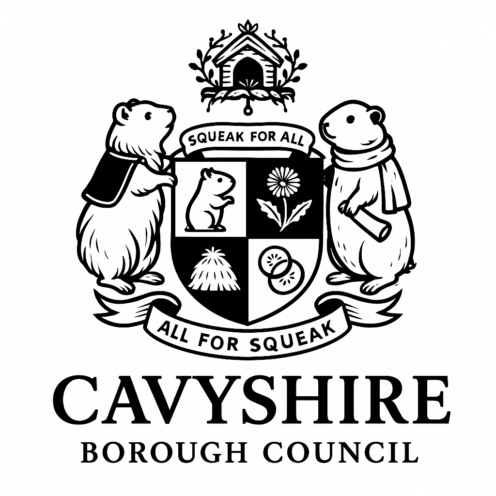

Council Name: Cavyshire Borough
Council
Region: South East England
Motto: "Squeak for All, All for Squeak"
🏛️ Overview:
Cavyshire is a whimsical yet civic-minded borough where guinea pigs are the symbolic (and sometimes literal) centre of governance. The council prides itself on inclusivity, sustainability, and small-scale, high-impact local policy. It blends serious local government structure with playful guinea pig motifs and traditions.
🐹 Council Structure:
Mayor: Cllr. Clover Nibblestone
A ceremonial guinea pig mascot (real, fluffy, and extremely well-behaved),
Clover attends every full council meeting in a velvet-lined travel hutch
and
has final symbolic approval on council motions via a "carrot tap" ritual.
Council Leader: Cllr. Marjorie
Tuffwhiskers
(Labour–Cavy Central)
Human councillor, known for wearing guinea pig brooches and campaigning
for
“warm hay for all.”
Political Parties in Cavyshire:
- Guinea Greens – Focused on environmentalism, allotments, and ethical bedding.
- Haytionals – Traditionalists who advocate for returning to straw-based infrastructure and historic burrow preservation.
- Piggie First – Centre-left localist party campaigning for accessible vet services and increased guinea pig representation on council murals.
- SqueakIndependents – A mix of quirky councillors who campaign independently on niche issues like cucumber zoning.
🛠️ Services & Departments:
-
Dept. of Hutching & Urban Development (HUD):
Ensures all new housing estates meet the "Cosy Cubicle Standard" (CCS), including side-by-side allotments for humans and guinea pigs. -
Office of Whistle Safety & Enrichment (OWSE):
Mandates community enrichment zones (mazes, tunnels, and climbing structures) in all public parks. -
Rodent Relations & Inter-Species Affairs (RRISA):
Manages local integration between guinea pigs, rabbits, and occasionally confused hamsters. Mediates disputes with the Borough of Ferretford. -
Community HayShare Scheme:
Subsidised hay and fresh veg drops, especially during the winter months. Co-managed with local youth via the “Young Squeakers” programme.
🐾 Local Landmarks:
-
The Squeakenham Town Hall:
Neo-Victorian with faux-hay bale cladding and a domed atrium inspired by a guinea pig’s nesting ball. -
Guinea Gardens:
A botanical garden themed around guinea pig-safe plants. Hosts weekly “Lap Time & Lettuce” therapy sessions. -
Wheekly Market Square:
Artisan market with traders offering hand-knitted piggie cozies, locally grown dandelion bundles, and squeak-friendly musical instruments.
📆 Notable Events:
-
The Big Wheek Festival (August Bank Holiday):
Features a "fastest tunnel dash" competition, veggie sculpture contests, and the crowning of the annual "Wheekminster". -
Bonfire Snuffle Night (5 November):
Bonfires replaced with ambient LED “Glow-Bales” to protect sensitive piggie ears, followed by marshmallow roasting and oat sharing. -
Cavy Carol Crawl (December):
Carol singing through local hutch villages. Songs include “We Wheek You a Merry Christmas” and “Silent Chew”.
📜 Legislation Highlights:
-
The Squeak Protection Act (2016):
Prohibits loud hedge trimming between dusk and dawn. -
The Hay Tax Rebate Scheme:
Citizens with more than two guinea pigs can apply for reduced council tax if they compost used bedding. -
The Cuddly Governance Clause:
Requires all councillors to attend bi-annual mindfulness and cuddle therapy sessions with registered therapy guinea pigs.
“Frankly, it's about time,” said longtime resident Enid Parsnip-Jones, 72, of Lower Snuffleton.
“For too long we've been governed by people who think a tunnel system is just for trains. This council understands the importance of a properly fluffed fleece and fresh parsley in public policy. My boys—Trevor, Buttons, and Señor Chew-Chew—finally feel seen.”

PRESS RELEASE
For Immediate Release
Date: 18 June 2025
Issued by: Cavyshire Borough Council
🐾 CAVYSHIRE BOROUGH COUNCIL LAUNCHES: A NEW ERA OF SQUEAKQUISITION BEGINS
SQUEAKENHAM, CAVYSHIRE – Following years of tireless community lobbying, gentle wheeking, and at least one very passionate carrot-based protest, the Government has finally rubber-stamped the formation of Cavyshire Borough Council — the UK's first entirely guinea pig-run local authority.
Cavyshire, nestled comfortably between Tunbridge Wells and “somewhere that sounds vaguely rural,” promises a bold new vision for municipal governance. One where inclusivity, softness, and the occasional lettuce leaf take centre stage.
“We believe in a future that is warm, fluffy, and rustles slightly when you walk,” declared Council Leader Cllr. Marjorie Tuffwhiskers (Guinea Greens), flanked by the newly instated ceremonial mayor, Cllr. Clover Nibblestone, who briefly nibbled a council-issued rosette before settling in for a nap.
Highlights from the council’s ambitious Ten-Year Wheek Ahead Strategy include:
- Mandatory Quiet Hour in Public Libraries (featuring complimentary lap pigs).
- Hutch Equity Initiative to ensure every garden in Cavyshire has at least one structurally-sound hidey home.
- A “No Squeak Left Behind” Education Plan introducing cucumber-based phonics at early years level.
- Public Transport Overhaul featuring fleece-lined seating and chew-resistant handrails.
The borough crest, which includes a haystack, cucumber slices, and a guinea pig in a mayoral cape, has already been described by the Local Herald as “frankly magnificent and quite possibly edible.”
When asked if the council will be extending services to other small mammals, a spokesperson responded, “We welcome dialogue — but this is our moment to squeak.”
Residents can meet their ward representatives at the inaugural Wheek & Greet Town Hall Picnic next Saturday, where council officers will be available to discuss planning permissions, bedding preferences, and whether kale is an acceptable treat more than twice a week.
ENDS
For media inquiries, please contact:
[press@cavyshire.gov.uk](mailto:press@cavyshire.gov.uk)
Or call the Council Helpline: 0800-WHEEK-IT-OUT